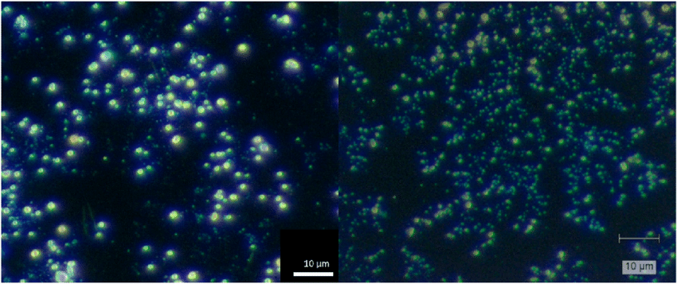
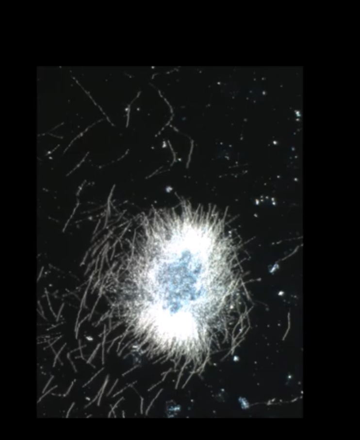
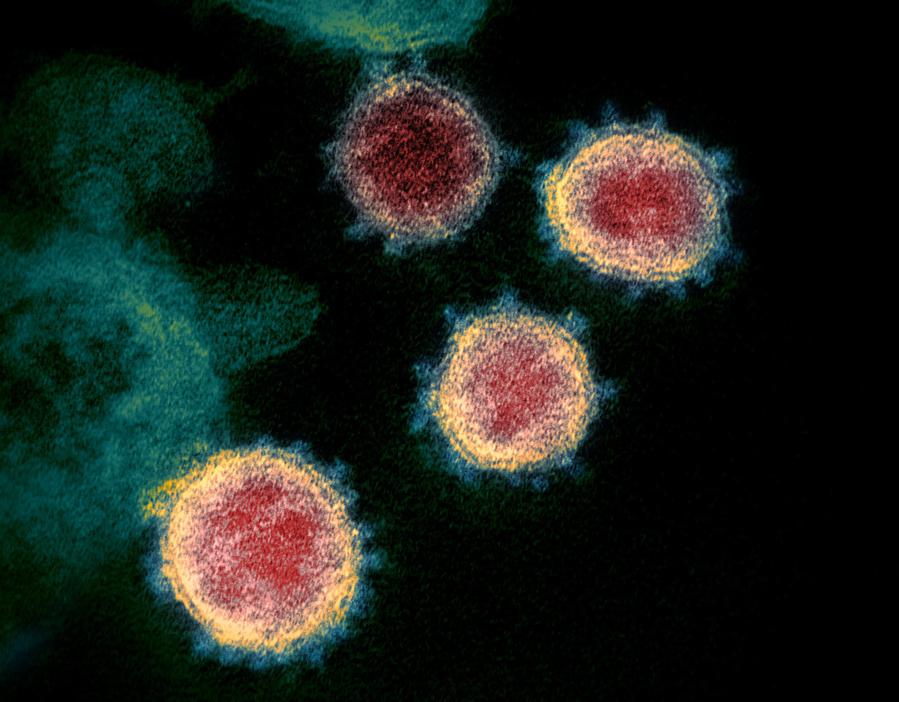
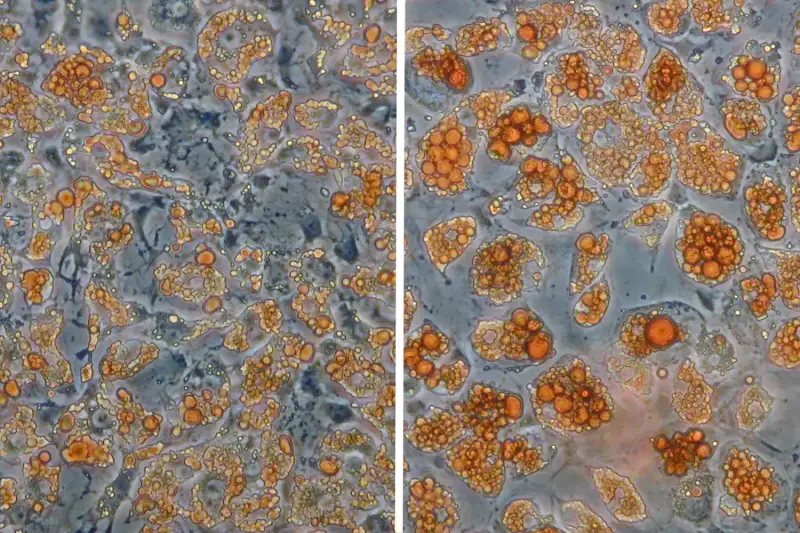
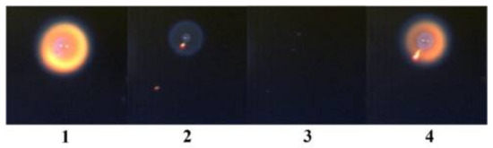

Note: This page is a speculative theory written by a student, not established science and not medical advice. Nothing here has been tested or peer reviewed, and it should not be used to diagnose or treat anything. If you are ill, please see a clinician. In the US, Poison Control is 1-800-222-1222.
This is a theory about whether a shared "electrical-charge" mechanism could link several illnesses. I have not tested it, and the mainstream account of every illness named below is different (see "What is already known").
I propose that "N-Contamination" (Nuclear Contamination) might describe a pattern in which N-Dodecane, an oil-like hydrocarbon, interacts with local electrical charge and with microbes or cells. I speculate that Strontium Aluminate, a glow-in-the-dark mineral used in some manufacturing, could play a buffering role. These are guesses meant to be tested, not findings.
The images below come from other sources. They are not my data, and they do not show what I speculate about them. I used them for their visual similarity only, and similar colour or shape is not evidence of a shared cause.





The theory would need to predict something that differs from the standard account. For example: if N-Dodecane were present in infected cells, a mass-spectrometry test of cultures and uninfected controls should show it. If electrical exposure mattered, infection rates should differ between shielded and unshielded cultures. If either test came back negative, the theory would have to be revised or dropped.
I am not proposing a treatment. An earlier version of this page contained a personal protocol (including supplements and avoiding certain medicines). I have removed it because it is untested and could cause harm. Please do not stop any medicine, take large doses of any supplement, or avoid medical care because of anything on this page. Please speak with a clinician or pharmacist first.
← Navigation